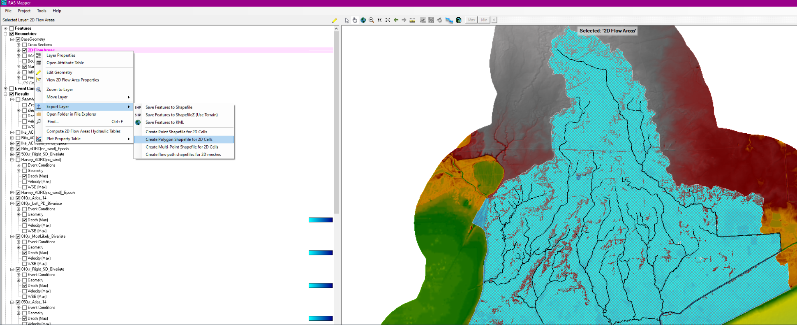
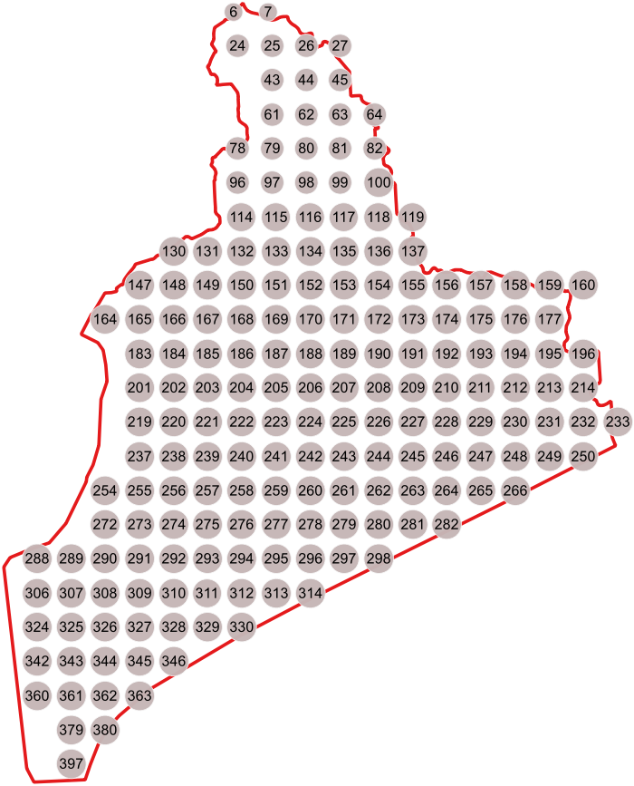

Data
QAQC Points
The qaqc points.geojson was generate via RAS Mapper and QGIS using the following steps:
Used RAS Mapper to export mesh.shp.
>
Used the QGIS tool called "Regular Points" o mesh.shp to create points.geojson.

Then deleted points that were outside of mesh.shp.

And labeled The QAQC points.

WSE Timeseries Data to a Event-Based Json file contained WSE data for each point.
This data was generated using "points_to_event_wse_json.py"
points_to_event_wse_json.py
This script reads WSE data from a set of HEC-RAS HDF plan files determined by a CSV file: "Z:\py\RAS_Bivariate_Analysis\data\GLO RAS Model Runs Distribution to Modelers.csv
For each HDF, the nearest QAQC points on the RAS Mesh were found and extracted to an event-based Json File containing WSE data for each QAQC point.
Map.js
The results have been published to the following website: https://glo-bivariate-results.onrender.com/index.html
This script is used to produce a map of teh QAQC points, and when a point is clicked, reads the event-based Json file and plots the WSE data for each QAQC point on the map.

WSE Timeseries Data to each point across all events.
This data was generated using "dev_wse_map_points_from_event_jsons.ipynb" and is added to the website using the top toolbar to navigate to "Max WSE Across Events".
This figure allows us to view trends in the data for points across the events by using only the maximum WSE for a point across each event.